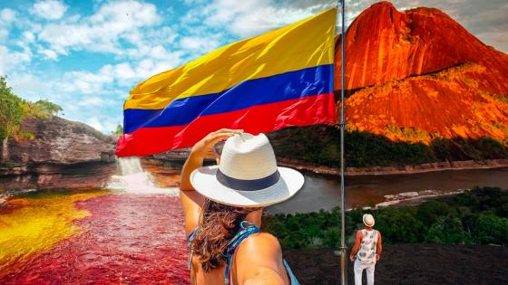

Colombia es uno de los países más diversos y atractivos de América Latina gracias a su riqueza natural, cultural e histórica. Su ubicación geográfica privilegiada le permite contar con una gran variedad de paisajes que incluyen playas paradisíacas, montañas, selvas, desiertos, llanuras y ciudades llenas de tradición. Esta diversidad convierte al país en un destino ideal para turistas nacionales e internacionales que buscan experiencias únicas y memorables.
Los sitios turísticos de Colombia destacan por su belleza y por la amplia oferta de actividades que ofrecen a los visitantes. Desde los paisajes cafeteros de la región andina hasta las aguas cristalinas del Caribe, cada región posee atractivos que reflejan la identidad y el patrimonio del país. Además, Colombia cuenta con numerosos parques naturales, monumentos históricos, museos, centros culturales y pueblos coloniales que permiten conocer su historia y tradiciones.
Entre los destinos más reconocidos se encuentran Cartagena de Indias, el Parque Nacional Natural Tayrona, el Amazonas, la Ciudad Perdida, San Andrés y Providencia, el Eje Cafetero y Caño Cristales, entre muchos otros lugares que atraen a miles de viajeros cada año. Estos destinos ofrecen oportunidades para practicar ecoturismo, turismo de aventura, turismo cultural y actividades recreativas para personas de todas las edades.
La hospitalidad de los colombianos, la riqueza gastronómica y la diversidad de manifestaciones culturales complementan la experiencia turística, convirtiendo a Colombia en un país lleno de oportunidades para descubrir, aprender y disfrutar. Gracias a sus múltiples atractivos, el turismo se ha consolidado como una de las actividades más importantes para el desarrollo económico y social del país.
